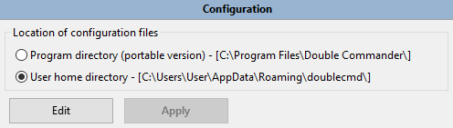

Main settings of Double Commander are saved/restored to/from an XML file named doublecmd.xml.
The location of this doublecmd.xml file may be in different places:
We follow follow this link if we want to specify it by with the command line paramter --config-dir.
Other than that, we do Configuration > Options > select in the tree  > set the option
> set the option Location of configuration files.

Another way to quickly find out where is located the doublecmd.xml the current instance of Double Commander is using is by accessing the Directory Hotlist. At the end of it there is a sub section called "Special Dirs". Then we select "Go to Double Commander special path" and then "%DC_CONFIG_PATH%". We will find there the doublecmd.xml that application is currently using.

The large majority of possible settings in Double Commander may be set via the application itselft through the various option categories.
We simply click from the main menu bar Configuration > Options and the various settings we'll configured there will be saved to the doublecmd.xml file when we close the application. Then, they will be restored on the next usage of the application.
So generally, we don't have to manually edit the content of the configuration file.
But there are some very rare specific settings that required to be edited manually from the configuration file if we want to tweak the application.
WARNING: We will not edit that file WHILE Double Commander is running! Not only because anyway their values are read only when we're starting the application, but also because if we edited the file while DC is running, when we'll close the application the values we would have wrote will be overwritten by the application re-saving its current context for next session. If we need to edit the doublecmd.xml file, we need to make sure we close Double Commander, then we edit file, and then we re-launch the application.
The following table gives us these rare specific settings that we need to manually edit the file if we need to change them:
| Setting required to be changed manually if necessary | |||||||||||||||||||||
|---|---|---|---|---|---|---|---|---|---|---|---|---|---|---|---|---|---|---|---|---|---|
| Tag | Description | ||||||||||||||||||||
<SingleClickStart> from <Behaviours><Mouse> |
This will determine what will launch the action when we're using the mouse button on an element from the displayed file list in a panel.
<SingleClickStart>0</SingleClickStart>
|
||||||||||||||||||||
<Quality> from many tags <Font> |
Determine what type of font rasterization that will be used. In other words, it determine the font quality. There are many tags where it's applicable individually.
<Quality>1</Quality>
| ||||||||||||||||||||
<ExtraLineSpan> from <FilesViews> |
This setting allows to add some extra pixels to the height allowed for each element displayed in the file panels. The value is interpreted directly in pixels. Default value is 2. Example: <ExtraLineSpan>2</ExtraLineSpan>
|
||||||||||||||||||||
<NtfsHourTimeDelay> from <FileOperations> |
Ignore time difference of exactly one hour when comparing files of directories when executing the internal command cm_CompareDirectories. This is useful when comparing between an NTFS and FAT volume when daylight saving time is enabled on the machine.
<NtfsHourTimeDelay>True</NtfsHourTimeDelay>
| ||||||||||||||||||||
<AutoExtractOpenMask> from <FileOperations> |
Suppose we've "entered" into a compressed file and browing its content in the active panel. The files with the specified extension of this setting will be automatically unpacked from the archive when we press ENTER or double-click on them instead of showing the properties window. Example: <AutoExtractOpenMask>*.txt;*.mp3;*.mp4</AutoExtractOpenMask> |
||||||||||||||||||||
<Mode> from <AutoRefresh> |
The ability to delete watched directories. A "watched directory" is a directory that Double Commander has a kind of hook on it so it can monitor any modification in it. This way, it can refresh the displayable content of it if it's content changed. This setting allows to control how Double Commander will react if we attempt to delete one of these "watched directory" currently displayed in a panel, even in a non-activated tab.
<Mode>1</Mode>
|
||||||||||||||||||||
<CustomIcons> from <Icons> |
This option will help to determine if the icons used for drives, folders or archives will be the default ones from the system (Windows only) OR if it will be custom ones that we may set ourselves. The
If we want... ...everything from the system: 0 + 0 + 0= 0 so <CustomIcons>0</CustomIcons>...everything custom: 1 + 2 + 4 = 7 so <CustomIcons>7</CustomIcons>...drive custom, other system: 1 + 0 + 0 = 1 so <CustomIcons>1</CustomIcons>etc... If we wish to use custom icons, here is the location for each items:
|
||||||||||||||||||||
<ImageExifRotate> from <Viewer> |
Double Commander is able to recognize the metadata from Exif structure that might be encoded into a JPG image file. Inside that structure, there is an orientation flag that may be used to display the picture into the same orientation as it was taken like if was in portait, landscape, upside-down, mirror, etc. The ImageExifRotate tag configures Double Commander to indicate if we want the viewer to display the image using that information or not.
<ImageExifRotate>True</ImageExifRotate>
|
||||||||||||||||||||
<PathToLibrary> from <Lua> |
This is the path to indicate where is the Lua library. It will indicate the location of the required dll file lua5.1.dll when doing Lua Scripting. This path may be relative to the Double Commander executable file. Example: <PathToLibrary>..\..\Other\dll\lua5.1.dll</PathToLibrary> |
||||||||||||||||||||
<UseShellForFileOperations> |
To use the rename function as in Explorer. Works correctly with UAC.
<UseShellForFileOperations>True</UseShellForFileOperations>
|
||||||||||||||||||||